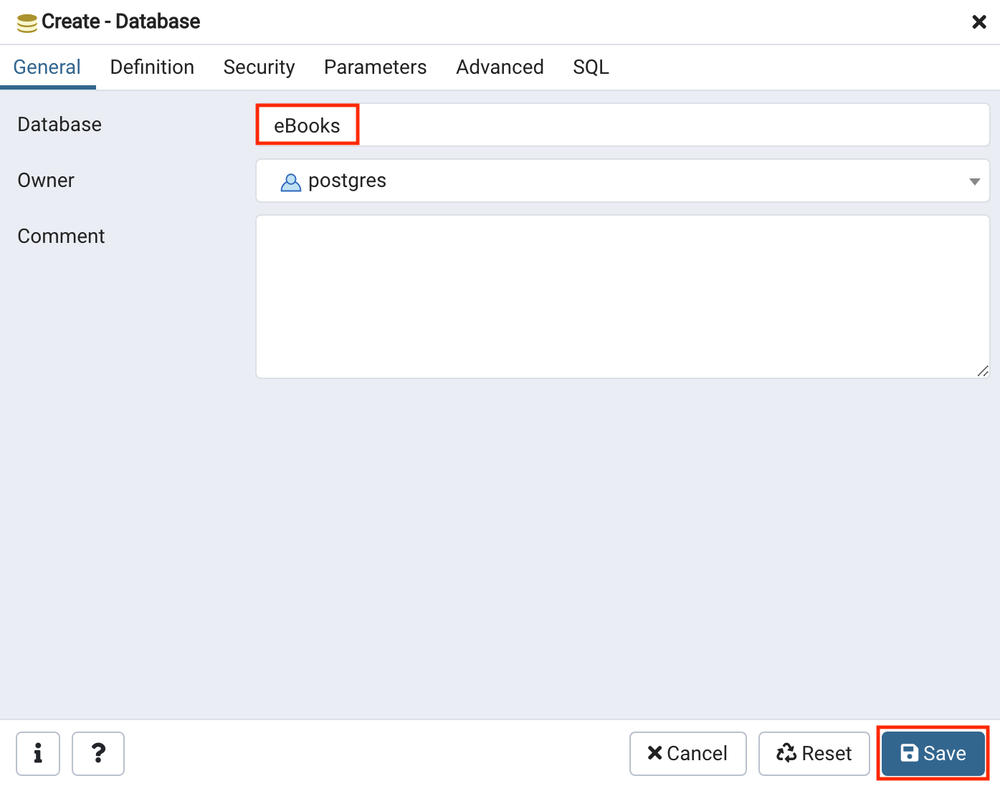
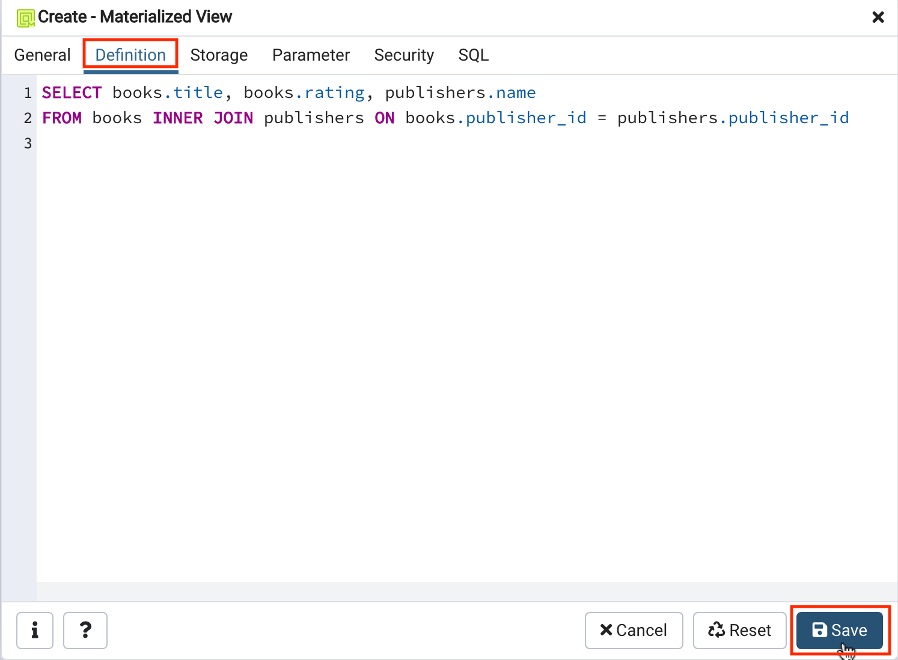

Click on the "Start" button. PostgreSQL may take a few moments to start.


Estimated time needed: 15 minutes
In this lab, you will learn how to create and execute views and materialized views in the PostgreSQL database service using the pgAdmin graphical user interface (GUI) tool. Materialized views behave differently compared to regular views. In materialized views, the result set is materialized, or saved for future use. You can't insert, update, or delete rows like in regular views. Essentially, materialized views store the results of a database query as a separate table-like object so that the query results can be accessed at a later time without having to re-run the query. As a result, materialized views can improve database performance compared to regular views.
In this lab, you will use the PostgreSQL Database. PostgreSQL is a Relational Database Management System (RDBMS) designed to efficiently store, manipulate, and retrieve the data.

To complete this lab you will utilize the PostgreSQL relational database service available as part of IBM Skills Network Labs (SN Labs) Cloud IDE. SN Labs is a virtual lab environment used in this course.
The eBooks database has been used in this lab.
The following ERD diagram shows the schema of the complete eBooks database used in this lab:

After completing this lab, you will be able to use pgAdmin with PostgreSQL to:
In this exercise, you will go through three tasks where you will learn how to create and execute views and materialized views in the PostgreSQL database service using the pgAdmin graphical user interface (GUI) tool.
To get started with this lab, you will first download the relevant eBooks database dump file, then launch PostgreSQL and pgAdmin using the Cloud IDE. You can do this by following these steps:
Download the eBooks PostgreSQL dump file (containing the eBooks database schema and data) below to your local computer storage.
Click on the "Start" button. PostgreSQL may take a few moments to start.
Next, open the pgAdmin Graphical User Interface by clicking the "pgAdmin" button in the Cloud IDE interface.
Once the pgAdmin GUI opens, click on the Servers tab on the left side of the page. You will be prompted to enter a password.
Click on the Copy icon to the left of your password to copy the session password onto your clipboard.
OKYou will then be able to access the pgAdmin GUI tool.
In the tree-view, expand Servers > postgres > Databases. Enter your PostgreSQL service session password if prompted during the process. Right-click on Databases and go to Create > Database. Type eBooks as name of the database and click Save.


In the tree-view, expand eBooks. Right-click on eBooks and select Restore.
Follow the instructions below to restore and proceed to Task B:
On the General tab, click on the Select file button by the Filename box.
Click the Upload File button.

Double-click on the drop files area and load the eBooks_pgsql_dump.tar you downloaded earlier from your local computer storage.

When the upload is complete, close the drop files area by clicking the X button.
Make sure Format is set to All Files, select the uploaded eBooks_pgsql_dump.tar file from the list, and then click the Select button.
Now switch to Restore options tab.
Under Disable, set the Trigger option to Yes. Then click Restore button.

In the tree-view, expand eBooks > Schemas > public. Right-click on Views and go to Create > View.
On the General tab, type publisher_and_rating_view as name of the view. Then switch to Code tab.
On the Code tab, copy and paste the code below. Then click Save.
n1ql
SELECT books.title, books.rating, publishers.name
FROM books INNER JOIN publishers ON books.publisher_id = publishers.publisher_id
In the tree-view, expand Views. Right-click on publisher_and_rating_view and go to View/Edit Data > All Rows.
You will access the view you created. This allows you to actually access and view the contents of tables in your database.
In the tree-view, expand eBooks > Schemas > public. Right-click on Materialized Views and go to Create > Materialized View.
On the General tab, type publisher_and_rating_materialized_view as name of the view. Then switch to the Definition tab.
On the Definition tab, copy and paste the code below. Then click Save.
n1ql
SELECT books.title, books.rating, publishers.name
FROM books INNER JOIN publishers ON books.publisher_id = publishers.publisher_id

In the tree-view, expand Materialized Views. Right-click on publisher_and_rating_materialized_view and go to Refresh View > With data.
Right-click on publisher_and_rating_materialized_view again and go to View/Edit Data > All Rows.
You will access the materialized view you created.
As you can see, at first glance it doesn't look too different from the regular view you created earlier in this lab - indeed, from the user perspective it's essentially the same: you see the results of a query displayed in a table-like format. The difference is that this materialized view is cached in the database so that the data can be accessed again at a future time without having to re-run the database query, which can be intensive on the server depending on the complexity of the query and the size of the table being queried.
| Date | Version | Changed by | Change Description |
|---|---|---|---|
| 2021-03-25 | 1.0 | Sandip Saha Joy | Created initial version |
| 2021-10-18 | 1.1 | David Pasternak | Updated instructions |